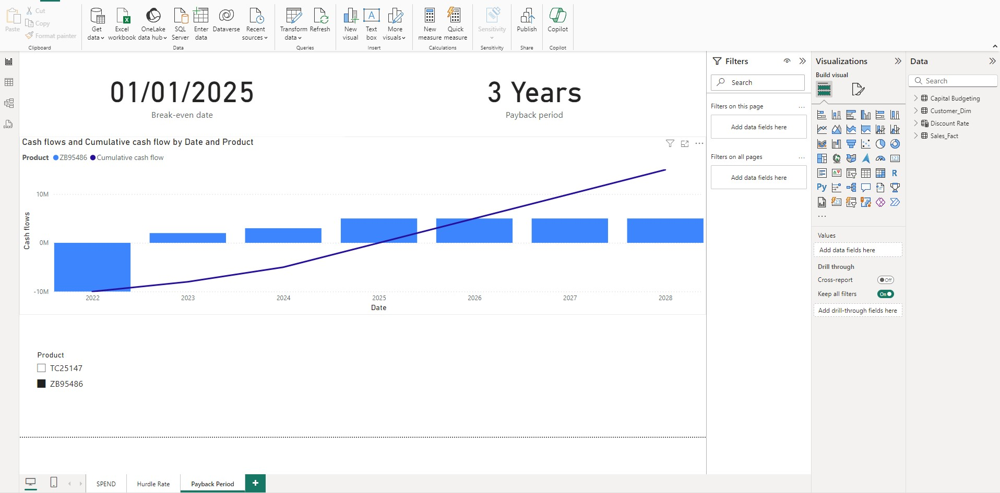
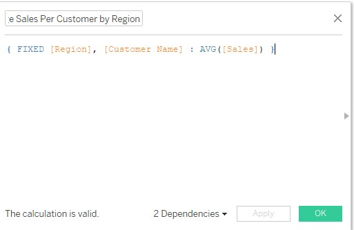
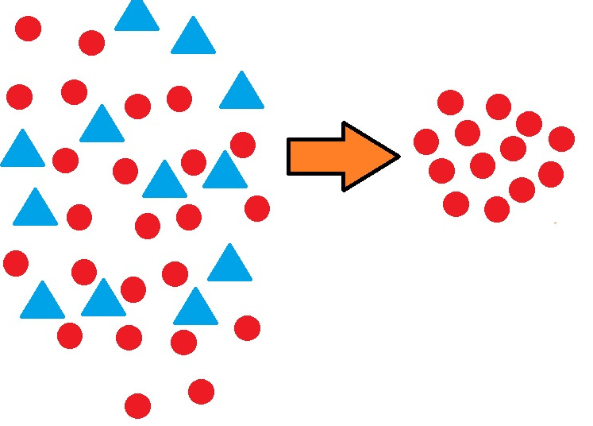

This article outlines the steps and strategies I would take if I were to start my journey toward becoming a data scientist from scratch. It covers the essential foundations in mathematics and programming, emphasizes the importance of hands-on practice and specialization in key areas like machine learning and big data, and highlights the value of building a strong portfolio and networking within the data science community. Whether you're new to the field or looking to refine your approach, this guide provides a comprehensive roadmap to successfully navigate a career in data science.

LOD expressions provide powerful ways to manipulate data at various levels of detail, allowing for more nuanced and insightful analyses. They are essential for advanced Tableau users looking to create more complex and informative visualizations. This overview captures the essence of LOD expressions and their importance in Tableau for advanced data analysis and visualization.

Choosing the right data visualization tool for financial analysis can significantly impact your ability to make informed decisions. Power BI and Tableau are two leading tools in the industry, each offering unique strengths in data connectivity, ease of use, advanced analytics, and AI capabilities. This article compares these platforms, focusing on their suitability for financial analysis, helping you decide which tool aligns best with your needs and budget.

This article delves into the concept of sampling bias, exploring how it can distort research outcomes by misrepresenting the population. It discusses the causes and consequences of sampling bias and offers practical strategies for identifying and mitigating it to ensure more accurate and reliable data analysis.
This article provides a comprehensive checklist for managing machine learning projects, covering essential steps from project scoping and data preparation to model building and deployment. It emphasizes best practices to ensure project success and offers practical guidance for data scientists at all stages of their projects.
The article outlines the top ten essential skills for business data scientists. It covers statistical analysis, programming, machine learning, data visualisation, data cleaning, domain knowledge, communication, problem-solving, big data technologies, and business acumen. Each skill is detailed, emphasising its role in driving strategic decisions and valuable insights. Mastering these skills enables data scientists to combine technical expertise with business understanding, driving innovation and competitive advantage.